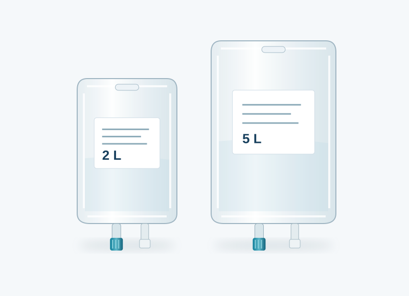
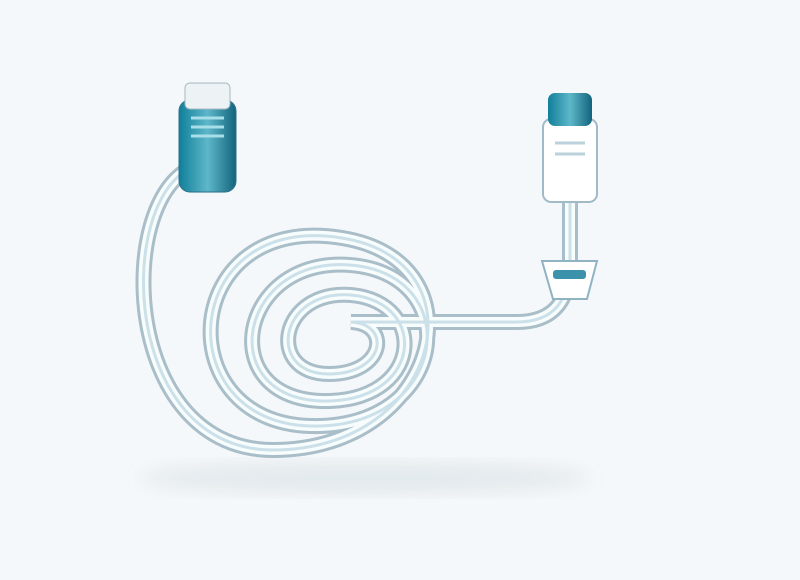
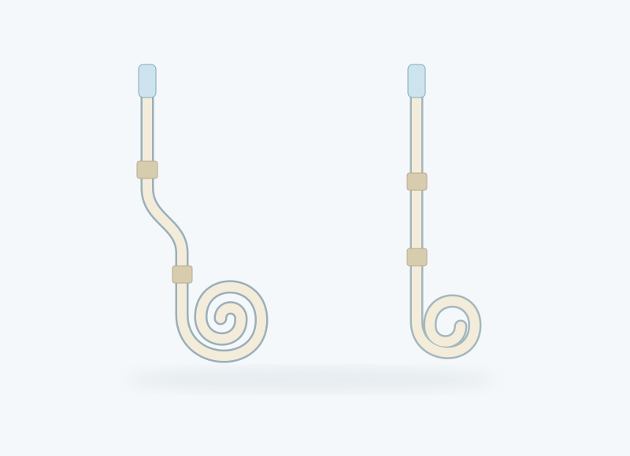
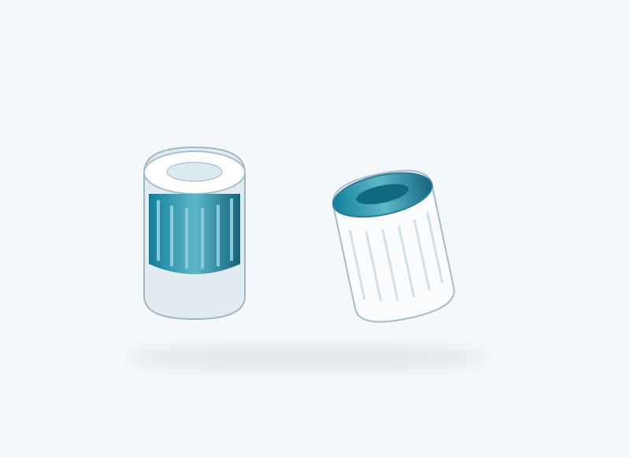

CAPD dialysis fluid bags
We sell CAPD dialysis fluid bags. Ask our team about current brands, available pack sizes and strengths, prices, and delivery to your city.
- CAPD fluid bags
- Pack details on enquiry
Supplies
We sell CAPD fluid bags and tubing. Explore transfer sets and the wider PD range, then ask us for current prices, stock and product details.

We sell CAPD dialysis fluid bags. Ask our team about current brands, available pack sizes and strengths, prices, and delivery to your city.

We sell CAPD tubing. Contact us for current configurations, pack details, prices and availability. Confirm the exact product required with your PD team.
Transfer sets are included in our PD supply catalogue. Contact RYNOR to check current availability, connector configuration and pack details.

Our planned catheter portfolio includes swan-neck and curled variants. Final combinations, sizes and specifications remain in development.

Mini-caps and related disinfection accessories are part of the planned supporting range. Final products and packaging remain in development.
Clear your search or change the category and availability filters.
A little clarity
Our team will confirm the exact product, current stock, price and delivery options. The website does not take payment.
Use “Request price & availability” on the product you need. Leave either your phone number or email, plus your city and quantity if known. RYNOR will respond with the available options.
Ask your PD team to confirm the product and configuration you need, then check the exact pack details with RYNOR. The illustrations are not compatibility guides.
Contact us to confirm transfer-set availability. The RYNOR APD machine and its dedicated range remain in development and are not for sale.
CAPD fluid bags and tubing are available for sale. Other categories show their own status. Illustrations do not establish specifications or compatibility.
For product enquiries, clinical collaboration and future partnerships.